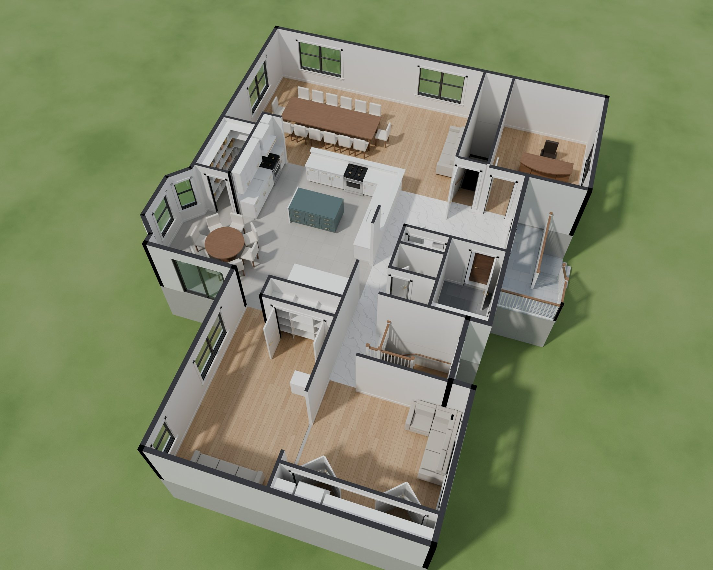
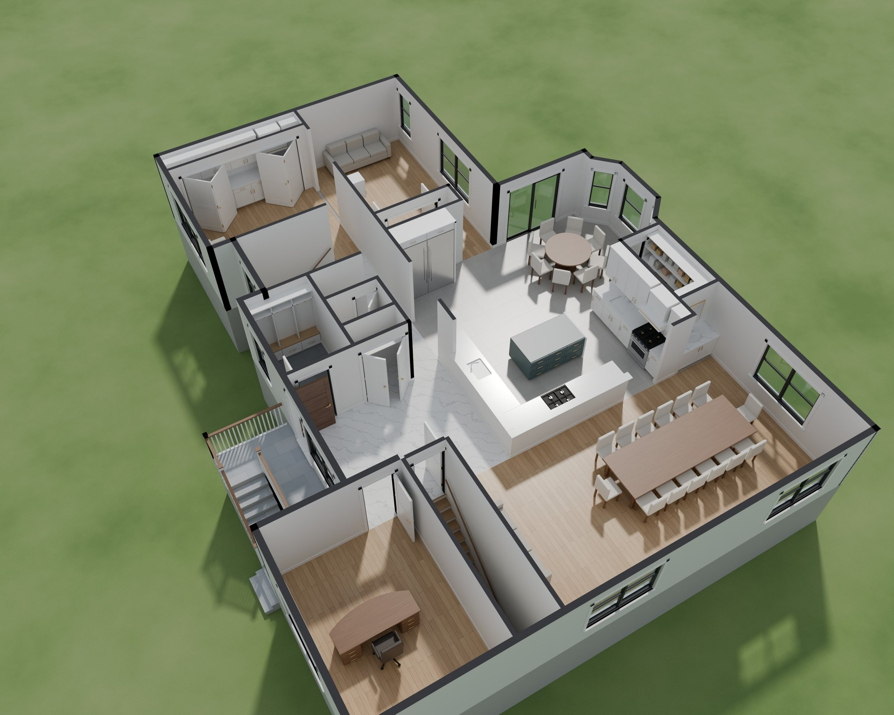

סיור בגובה העיניים · קומה ראשונה
כניסה
Entry
הליכה חופשית
תמונות 360°
תוכנית
מבט על
מסך מלא
הליכה
טוען את הבית…
הבית במבט על
חזרה לסיור

מבט מדרום, באותו כיוון כמו התוכנית: חדר האוכל בצד הרחוק, הסלון וחדר המשחקים קרובים.

מבט מצד הכניסה: המרפסת המקורה והמדרגות שלה, המדרגות למרתף והמטבחון שמאחורי דלתות ההרמוניקה.
תוכנית במבט ישר מלמעלה עם שמות החדרים.